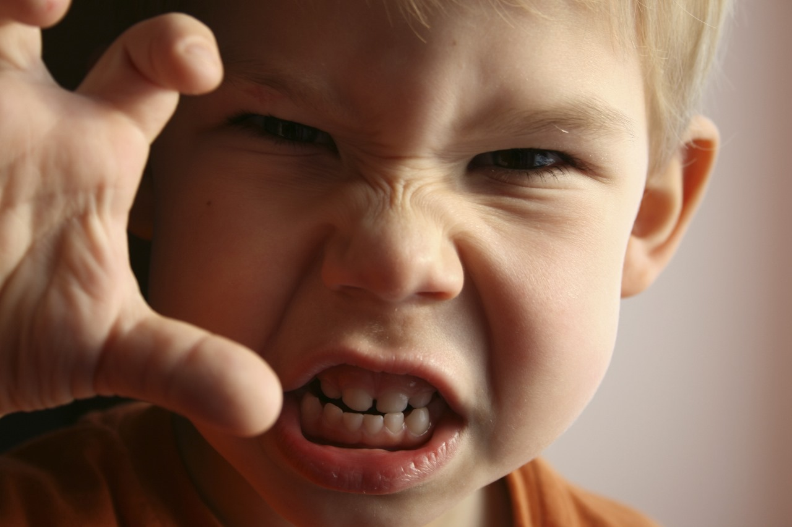
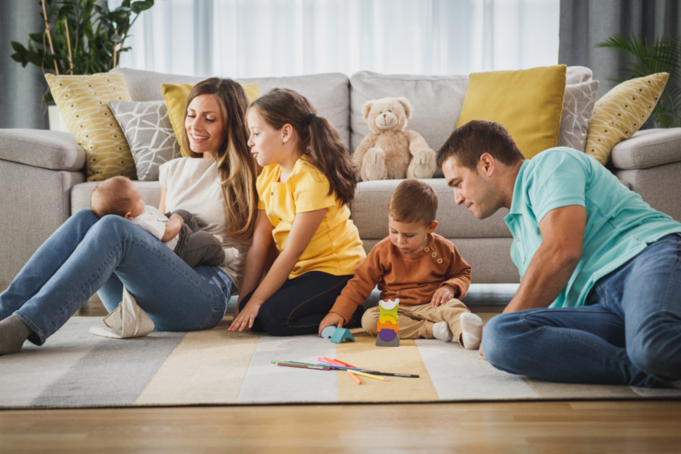
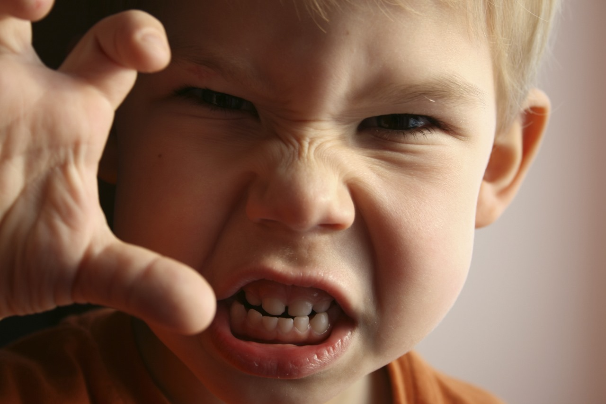
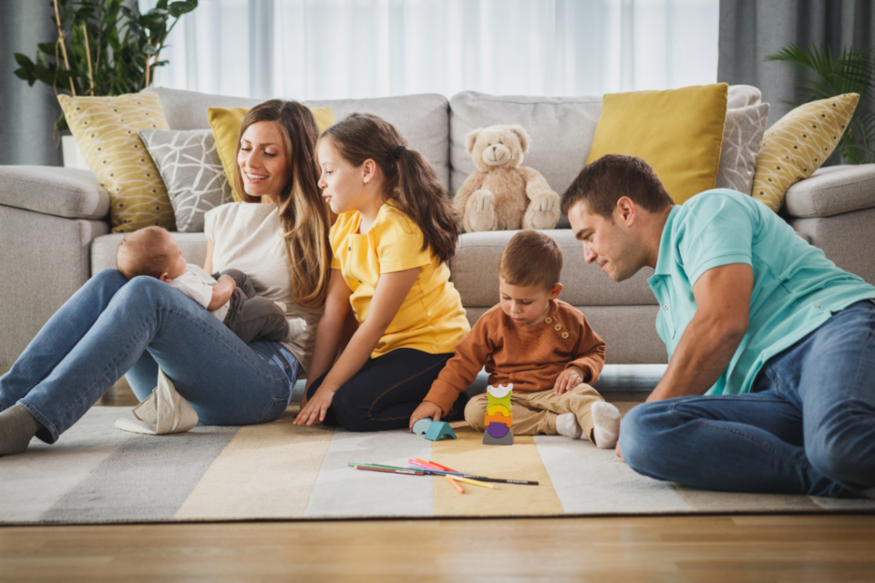
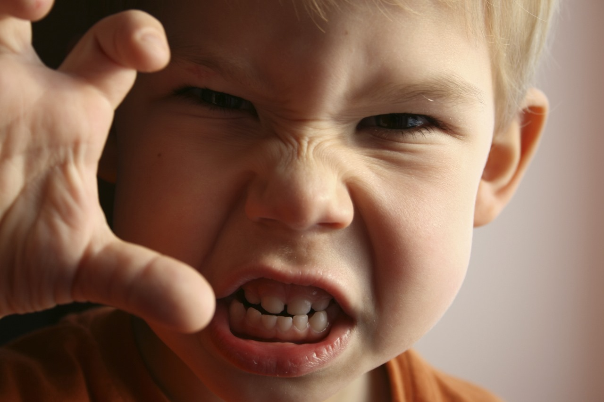
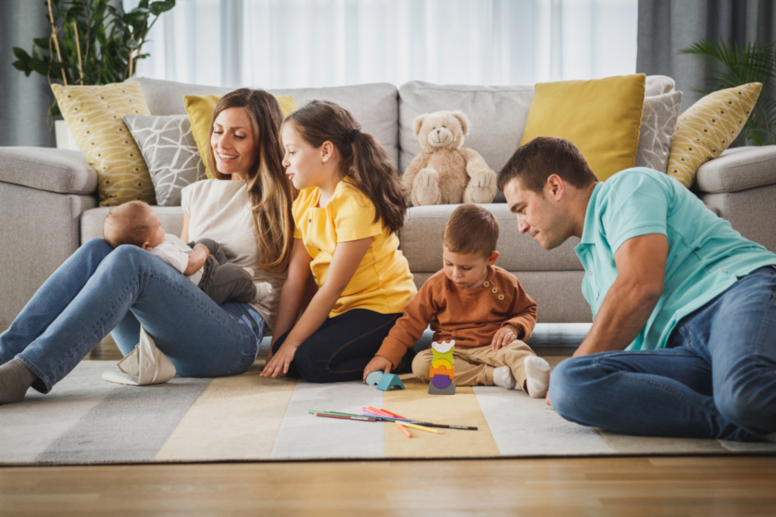
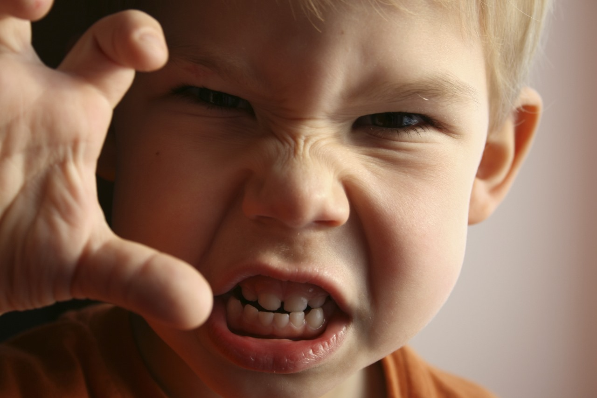
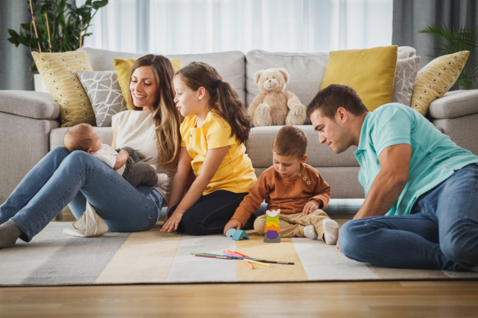

 



1. which picture do you like the most?
2. select the picture which you feel as the most happiest picture?
3. Have you experienced any significant changes in your appetite or eating habits recently?
4. Do you often feel overwhelmed by stress or anxiety?
5. How well have you been able to concentrate on tasks or work?
6. Have you noticed any changes in your interest or enthusiasm for things you used to enjoy?
7. Do you feel socially connected and satisfied with your relationships?
8. How would you rate your overall energy levels recently?
9. Have you had thoughts of self-harm or hurting yourself in any way?
10. Have you talked to someone about your feelings or concerns lately?